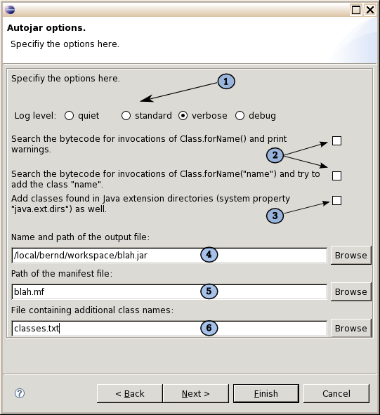

|
Options
In this window some basic options can be set. This has only to be done
once; all settings are remembered and will be present the next time you
start the plugin. If you don't want to change any options, you may
already start the Autojar action by clicking on "Finish" here.
(1) At the top the verbosity of the console output is set, according to the options -q, -v, and -D of the command line tool (see Options). (2) Below are two checkboxes which control the handling of dynamic class loading. They correspond to the command line options -d and -a (see Reflection). (3) The bottom checkbox controls whether or not classes from extension directories are to be copied to the archive (option -e). Normally you don't want to do this! (4) In the first text field the name of the output file must be entered (preset with PROJEKT.jar). This field is mandatory. (5) In the second field a manifest file can be supplied. Its content will be copied to the MANIFEST file of the created jar file. If the given file contains a Main-Class entry, the corresponding class will be looked up and added to the output file (as usual including all directly or indirectly referenced classes). (6) Finally a text file may be supplied which contains a list of class names to be looked up (one per line). This is not essential, as classes are normally entered through the wizard, but may be convenient if somebody wants to prepare a longish class list independent of Eclipse. |
Automatic creation of Java archives |
| Bernd Eggink, monoped@users.sourceforge.net |
 SourceForge project page SourceForge project page |

|